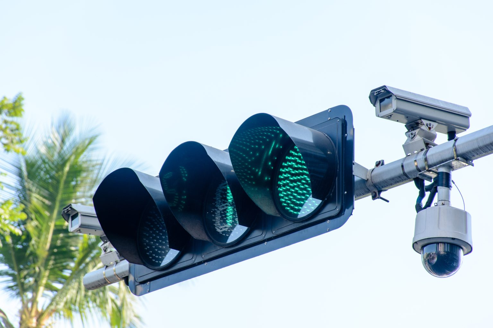

What are the Benefits of Smart Cities?
Public safety
A few of the ways smart technology can help to keep communities safe include:
-
Monitoring the safety of buildings: Through the use of IoT sensors, buildings can be monitored for structural damage. If a smart building is damaged or structurally unsound, the sensors can detect these changes and alert the proper officials so a solution can be implemented.
-
Gunshot detection: Using a distributed array of microphones, acoustic gunshot detection systems (AGDS) can quickly identify gunshots. This form of smart technology can also alert authorities to the location of the gunfire as well as the number of possible shooters, helping to improve response time and preparedness for the situation.
-
Natural disaster early warning systems: Many cities are located in areas that are prone to fires, flooding, landslides, hurricanes, and other extreme weather conditions. Smart city systems can help to predict these events by analyzing real-time data and can alert officials to the potential danger, allowing for a quicker response time. For an example of an emergency and mass notification solution, check out our Singlewire customer story.
Improved transportation

Smart city technology is helping to streamline operational processes. For example:
-
Smart city traffic control: On-site devices like cameras and sensors can control the timing of traffic lights based on factors like how heavy traffic is, the time of day, and weather conditions. Through the use of smart traffic technology, a streamlined traffic system can be created, helping to prevent congestion and traffic-related accidents. This technology also limits the need to widen roads by making the most of the space available.
-
Transportation efficiency: With the help of cameras and sensors placed at bus stops as well as inside buses, cities are better able to gauge how many people are boarding each bus and at what times. Using this data, smart cities can optimize transportation systems and make the most of bus capacity.
Reduced environmental impact
Along with improving the quality and safety of day-to-day life, smart cities are also helping us to think more about our future.
-
Energy conservation: With smart technology, cities can reduce energy usage by employing sensors on street lights that light up and dim based on real-time data. These sensors can be programmed to detect movement, turning on when motion is detected on roadways and dimming when roads are clear.
-
Transition to renewable energy sources: Like all grids, smart grid solutions connect all the energy producers and consumers and even other factors such as real-time data from the electricity market and weather forecasts to enable a flexible response to supply and demand. As the future of energy supply becomes increasingly decentralized this will become more and more important. Check out our customer story on how neoom is creating Internet of Energy (IoE) solutions to enable the transition to green energy.
-
Water waste: Water leaks can waste significant amounts of water, cause environmental damage, and lead to costly downtime while the pipe is being repaired. With smart sensors, leaks in pipes can be detected at an earlier stage, allowing for quicker repairs.
-
Air pollution: Smart sensors continuously monitor air quality to measure levels of pollution and determine the source. Using the data gathered from these sensors, cities can better identify high-pollution areas and plan accordingly on how to reduce airborne contaminants in those areas.